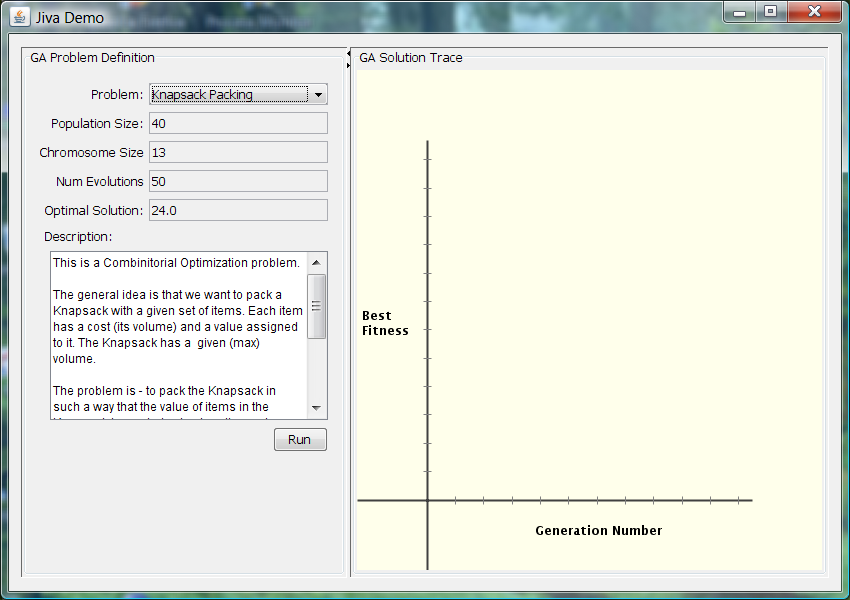
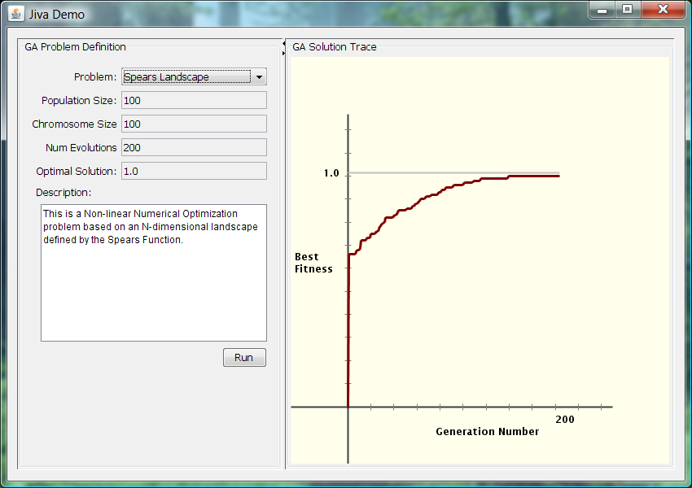

Welcome to Jiva version 0.3
This document assumes that you have downloaded and extracted the Jiva zip-file into a folder called JIVA_ROOT.
Here's what you need to do to get up and running with Jiva:

The pane on the left shows you a Sample Problem. The Pane on the right shows the solution to the Problem as determined by Jiva - during and after a Problem run.
The 'Problem' combo-box at the top of the left pane allows you to select a Demo Problem to run. Once you select a Problem, information about the Problem is displayed in the fields below the combo-box.
Click on the Run button to run a selected Problem. After a Problem run, you should see something like this:

The Pane on the right shows a graph of the Genetic Algorithm (GA) generation number vs the Best fitness of a solution within that generation. The horizontal grey line at the top of the graph is the Optimal solution to the problem.
As you run a Problem, you should see the Jiva generated solution approach the optimal solution. After a run is complete, you would expect to see that the Jiva generated solution is very close to the Optimal solution.
Keep in mind: Genetic Algorithms are heuristic/non-deterministic in nature, so the Jiva generated solution is not guaranteed to be equal to the Optimal solution (but it should be close).
There will be more documentation available very soon on how to start playing/experimenting with Jiva from a developer perspective.
For more information, you can reach me at pant.lalit@gmail.com